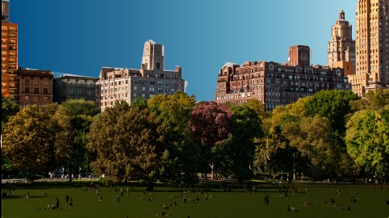

Stephanie Livian, student and wholesale jewelry operations manager. I do a range of photography on a daily basis - from pictures of me and my friends, food, and jewelry shots. I wish to expand my horizon with photography and understand the logistics behind it. Additionally, I would like to learn how to use photoshop for when it is needed. Currently my main creative work consists of taking and retouching jewelry images of high-end jewelry. I use an application on iPhone to touch up the jewelry images, and I would like to strengthen those skills and convert them into using photoshop to make them look more clean and professional.

Central Park, New York - Retouched to look like autumn
Reading Responses